Add a CWCU account for internal transfers
This guide will help you add another Central Willamette Credit Union (CWCU) account so you can send money internally to friends, family, or your own business accounts.
1
Click "Move Money"
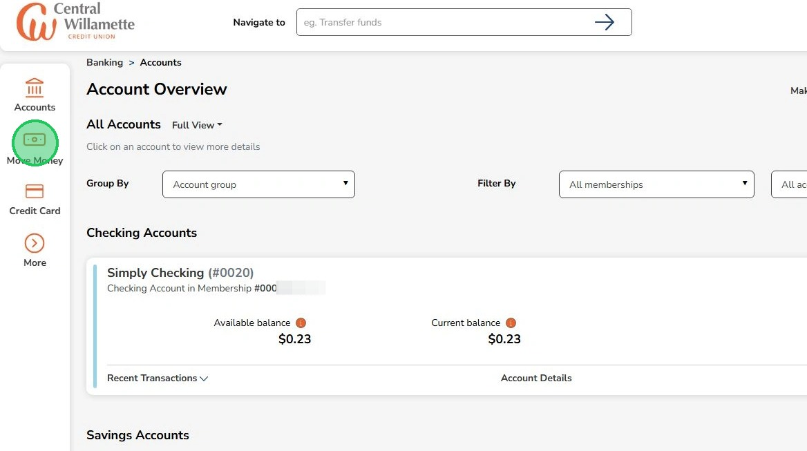
2
Click "Member-2-Member"
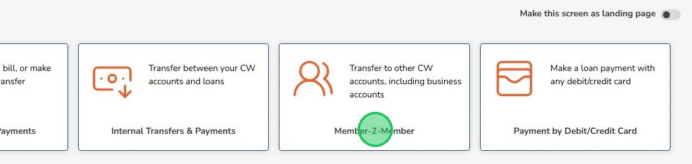
3
Click "Add Recipient"
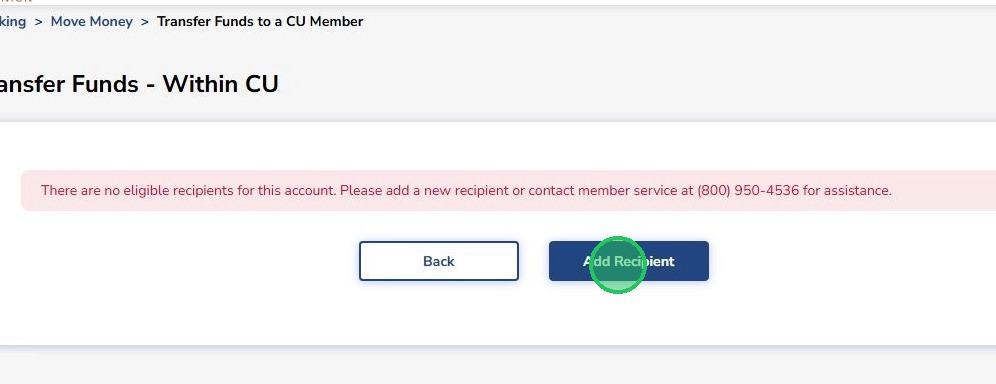
4
You can also click "Member-2-Member Setup under 'Related Links'
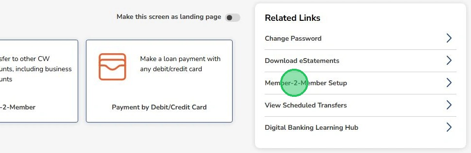
5
Enter a name for the recipient.
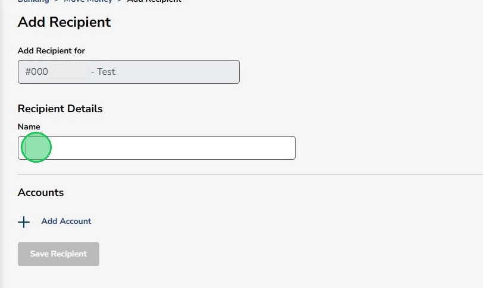
6
Click "Add Account"
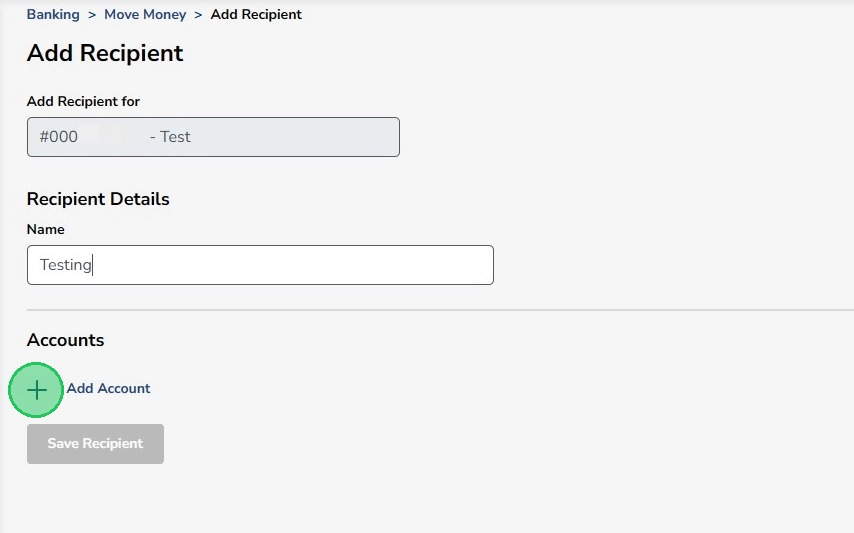
7
Enter the recipient's member number.
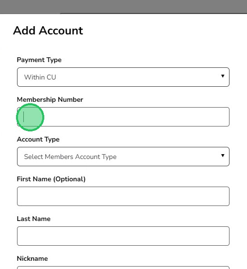
8
Select the recipient's account type. Choose "Other" to enter a specific share ID.
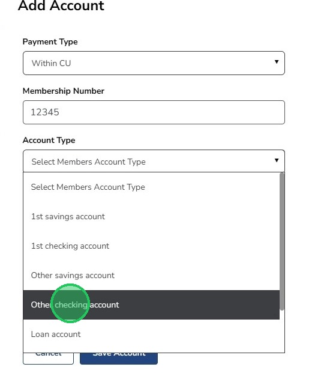
9
Enter the share ID if needed.
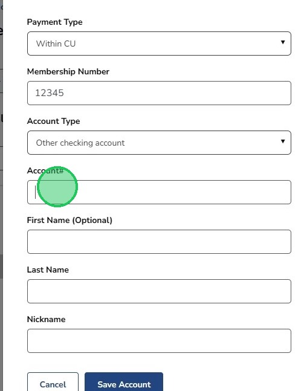
10
Enter a first name (optional)
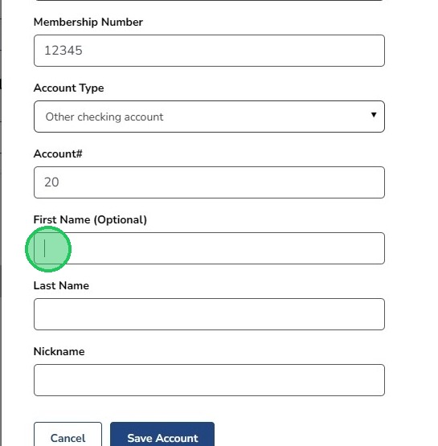
11
Enter the last name or full business name (must match exactly how it appears on the Accounts Page for businesses).
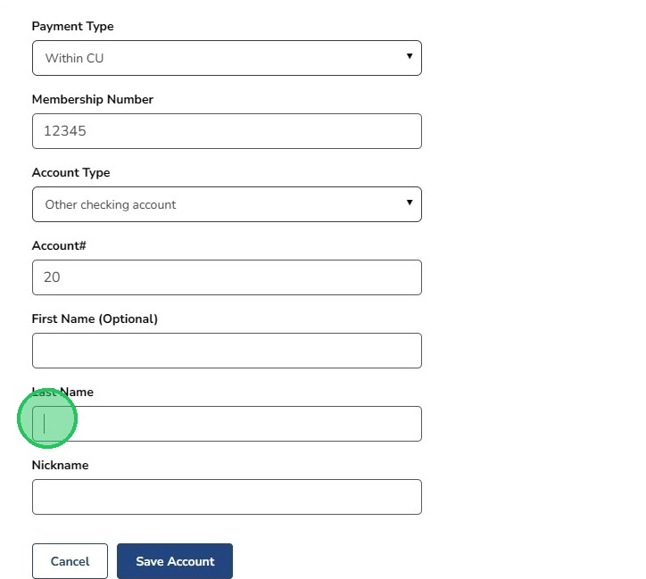
12
Enter a nickname and click "Save Account"
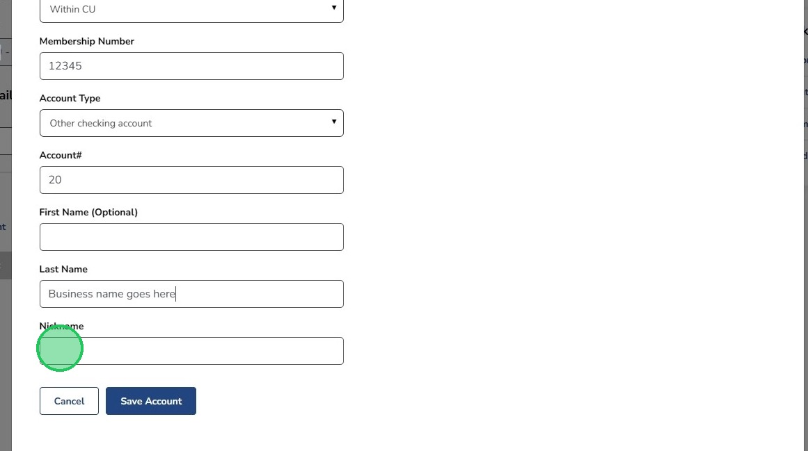
The account will immediately appear in your available 'To' accounts on the Member-2-Member page